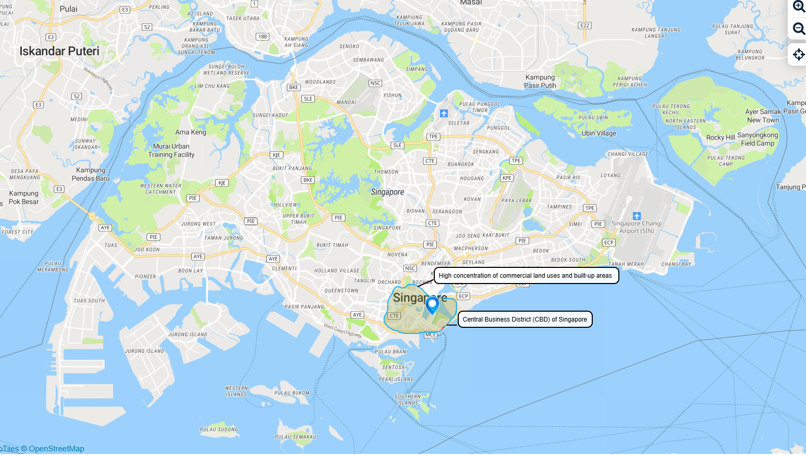
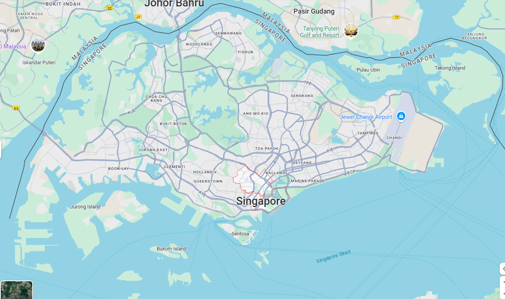
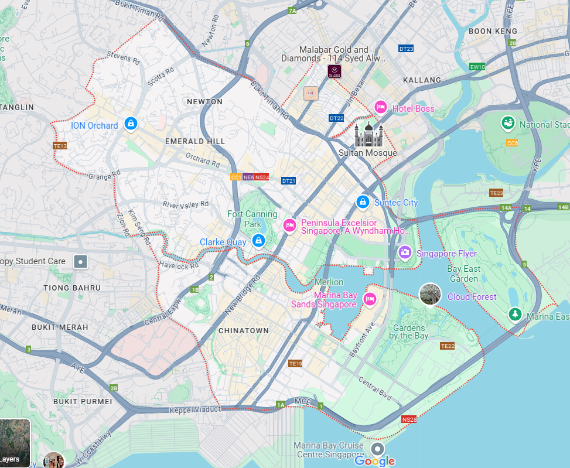

pacman::p_load(sf, tmap,
spdep, tidyverse,
httr, jsonlite,
SpatialAcc, ggstatsplot)Take-home Ex 3: Predicting HDB Resale Prices with Geographically Weighted Machine Learning Methods
1.0 Introduction
1.1 The Task
In this take-home exercise, we are required to calibrate a predictive model to predict HDB resale prices between July-September 2024 by using HDB resale transaction records in 2023.
1.2 The Data
Below is the list of data used for this take-home exercise. These data are extracted from data.gov.sg and LTA Data Mall. We will be looking at resale flat that are 4-room, for ease of data manipulation. Similar method could be applied for resale HDB of various size.
Structural factors (From resale data)
Area of the unit
Floor level
Remaining lease
Age of the unit
Locational factors
Proxomity to CBD
Proximity to eldercare
Proximity to foodcourt/hawker centres
Proximity to MRT
Proximity to park
Proximity to good primary school
Proximity to shopping mall
Proximity to supermarket
Numbers of kindergartens within 350m
Numbers of childcare centres within 350m
Numbers of bus stop within 350m
Numbers of primary school within 1km
2.0 Getting Started
2.1 Setting up the environment
2.2 Importing and Wrangling the Data
Importing all the data into the R environment.
2.2.1 Resale HDB Data
Resale data (3-Room Flat), and transaction between Jan 2023 to Sep 2024. Selecting to retain only relevant fields:
Address
Postal Code
Area of the unit
Floor level
Remaining lease
Age of the unit
x-y coordinates (left_join with coordinates extracted through reverse geo-coding with address using onemap API)
resale <- read_csv("data/rawdata/resale.csv") %>%
filter(flat_type == "3 ROOM") %>%
filter(month >= "2023-01" & month <= "2024-09") %>%
mutate(address = paste(block,street_name)) %>%
mutate(remaining_lease_yr = as.integer(
str_sub(remaining_lease, 0, 2)))%>%
mutate(remaining_lease_mth = as.integer(
str_sub(remaining_lease, 9, 11))) %>%
mutate(age_of_unit = 2024 - lease_commence_date) %>%
select(address, floor_area_sqm, storey_range, remaining_lease_yr, remaining_lease_mth,age_of_unit)Extracting the coords:
add_list <- sort(unique(resale$address))get_coords <- function(add_list){
# Create a data frame to store all retrieved coordinates
postal_coords <- data.frame()
for (i in add_list){
#print(i)
r <- GET('https://www.onemap.gov.sg/api/common/elastic/search?',
query=list(searchVal=i,
returnGeom='Y',
getAddrDetails='Y'))
data <- fromJSON(rawToChar(r$content))
found <- data$found
res <- data$results
# Create a new data frame for each address
new_row <- data.frame()
# If single result, append
if (found == 1){
postal <- res$POSTAL
lat <- res$LATITUDE
lng <- res$LONGITUDE
new_row <- data.frame(address= i,
postal = postal,
latitude = lat,
longitude = lng)
}
# If multiple results, drop NIL and append top 1
else if (found > 1){
# Remove those with NIL as postal
res_sub <- res[res$POSTAL != "NIL", ]
# Set as NA first if no Postal
if (nrow(res_sub) == 0) {
new_row <- data.frame(address= i,
postal = NA,
latitude = NA,
longitude = NA)
}
else{
top1 <- head(res_sub, n = 1)
postal <- top1$POSTAL
lat <- top1$LATITUDE
lng <- top1$LONGITUDE
new_row <- data.frame(address= i,
postal = postal,
latitude = lat,
longitude = lng)
}
}
else {
new_row <- data.frame(address= i,
postal = NA,
latitude = NA,
longitude = NA)
}
# Add the row
postal_coords <- rbind(postal_coords, new_row)
}
return(postal_coords)
}coords <- get_coords(add_list)write_rds(coords,"data/rds/coords.rds")coords <- read_rds("data/rds/coords.rds")resale_xy <- left_join(resale, coords,
by = "address") %>%
st_as_sf(coords = c("longitude", "latitude"),
crs=4326) %>%
st_transform(crs = 3414)write_rds(resale_xy, "data/rds/resale_xy.rds")resale_xy <- read_rds("data/rds/resale_xy.rds") 2.2.2 Proximity to CBD



Based on scribblemaps.com and google map, we can have a sense of Singapore’s CBD and Central Area. Central Area includes area spanning Orchard, Chinatown, Marina Bay, Marina East, Bras Basah, Rochor and Newton. For the purpose of this exercise, we will be taking Dhoby Ghaut MRT station(1.299866722252685, 103.8454773226203) as the definition of our centroid of the CBD area for distance calculation purpose. The reason for choosing this point is as such:
- Dhoby Ghaut MRT station serves three lines (N-S Line, N-E Line, and Circle Line)
- It is approximately central of the Central Area as per the google map.
Another possible centroid would be City Hall MRT(1.2932052372864624, 103.8519615479051), where it serves 2 main MRT lines (N-S Line and E-W Line) and would be representative of centroid when we consider including the Marina Bay East area as part of the Central Area of Singapore.
Next, we will create the sf object for Dhoby Ghaut MRT station.
cbd_dg <- data.frame(longitude = "103.8454773226203",
latitude = "1.299866722252685") %>%
st_as_sf(coords = c("longitude", "latitude"),
crs=4326) %>%
st_transform(crs = 3414)Then, we will check to ensure that both sf data.frame have the same CRS:
st_crs(cbd_dg) == st_crs(resale_xy) [1] TRUENext, we will calculate the distance(in metres) using st_distance and append it back to resale_xy:
distances <- st_distance(cbd_dg, resale_xy)
resale_xy$dist_to_cbd <- as.numeric(distances)2.2.3 Proximity to Eldercare
Since there may be multiple eldercare within the area, we will be using the proximity to the nearest available eldercare facility for the resale HDB. ELDERCARE is in shapefile format, hence, we will use st_read() to extract the file as sf data.frame, and also ensure the EPSG code is 3414 using st_transform().
eldercare <- st_read(dsn = "data/rawdata",
layer = "ELDERCARE") %>%
st_transform(crs = 3414) %>%
select(geometry)Reading layer `ELDERCARE' from data source
`C:\rydialiang\isss626-aug24\Take-home Exercise\Take-home_Ex03\data\rawdata'
using driver `ESRI Shapefile'
Simple feature collection with 133 features and 18 fields
Geometry type: POINT
Dimension: XY
Bounding box: xmin: 14481.92 ymin: 28218.43 xmax: 41665.14 ymax: 46804.9
Projected CRS: SVY21st_crs(eldercare)Coordinate Reference System:
User input: EPSG:3414
wkt:
PROJCRS["SVY21 / Singapore TM",
BASEGEOGCRS["SVY21",
DATUM["SVY21",
ELLIPSOID["WGS 84",6378137,298.257223563,
LENGTHUNIT["metre",1]]],
PRIMEM["Greenwich",0,
ANGLEUNIT["degree",0.0174532925199433]],
ID["EPSG",4757]],
CONVERSION["Singapore Transverse Mercator",
METHOD["Transverse Mercator",
ID["EPSG",9807]],
PARAMETER["Latitude of natural origin",1.36666666666667,
ANGLEUNIT["degree",0.0174532925199433],
ID["EPSG",8801]],
PARAMETER["Longitude of natural origin",103.833333333333,
ANGLEUNIT["degree",0.0174532925199433],
ID["EPSG",8802]],
PARAMETER["Scale factor at natural origin",1,
SCALEUNIT["unity",1],
ID["EPSG",8805]],
PARAMETER["False easting",28001.642,
LENGTHUNIT["metre",1],
ID["EPSG",8806]],
PARAMETER["False northing",38744.572,
LENGTHUNIT["metre",1],
ID["EPSG",8807]]],
CS[Cartesian,2],
AXIS["northing (N)",north,
ORDER[1],
LENGTHUNIT["metre",1]],
AXIS["easting (E)",east,
ORDER[2],
LENGTHUNIT["metre",1]],
USAGE[
SCOPE["Cadastre, engineering survey, topographic mapping."],
AREA["Singapore - onshore and offshore."],
BBOX[1.13,103.59,1.47,104.07]],
ID["EPSG",3414]]As there are multiple eldercares, we would need to first find the distance matrix, then find the minimum distance amongst all the matrix, and lastly, append the minimum dist back to our resale_xy dataframe.
dist_elder <- st_distance(resale_xy,eldercare)
min_distances <- apply(dist_elder, 1, min)
resale_xy$dist_eldercare <- min_distances2.2.4 Proximity to Foodcourt/hawker center
Similar steps are applied to Foodcourt/hawker center.
food <- st_read(dsn = "data/rawdata/HawkerCentresKML.kml") %>%
st_transform(crs = 3414) %>%
select(geometry) Reading layer `HAWKERCENTRE' from data source
`C:\rydialiang\isss626-aug24\Take-home Exercise\Take-home_Ex03\data\rawdata\HawkerCentresKML.kml'
using driver `KML'
Simple feature collection with 125 features and 2 fields
Geometry type: POINT
Dimension: XYZ
Bounding box: xmin: 103.6974 ymin: 1.272716 xmax: 103.9882 ymax: 1.449017
z_range: zmin: 0 zmax: 0
Geodetic CRS: WGS 84dist_food <- st_distance(resale_xy,food)
min_distances <- apply(dist_food, 1, min)
resale_xy$dist_food <- min_distances2.2.5 Proximity to MRT
Similar steps are applied to MRT.
mrt <- st_read(dsn = "data/rawdata",
layer = "G_MP08_ACT_MRT_STN_PT") %>%
st_transform(crs = 3414) %>%
select(geometry)Reading layer `G_MP08_ACT_MRT_STN_PT' from data source
`C:\rydialiang\isss626-aug24\Take-home Exercise\Take-home_Ex03\data\rawdata'
using driver `ESRI Shapefile'
Simple feature collection with 20 features and 7 fields
Geometry type: POINT
Dimension: XY
Bounding box: xmin: 27879.15 ymin: 28725.59 xmax: 31079.98 ymax: 32740.97
Projected CRS: SVY21dist_mrt <- st_distance(resale_xy,mrt)
min_distances <- apply(dist_mrt, 1, min)
resale_xy$dist_mrt <- min_distances2.2.6 Proximity to Park
Similar steps are applied to Park. As geojson file contains geometry information with Z-dimension (height), we will use st_zm() to remove this dimensions since we do not need this information.
park <- st_read(dsn = "data/rawdata/park.geojson") %>%
st_zm() %>%
st_transform(crs = 3414) %>%
select(geometry)Reading layer `park' from data source
`C:\rydialiang\isss626-aug24\Take-home Exercise\Take-home_Ex03\data\rawdata\park.geojson'
using driver `GeoJSON'
Simple feature collection with 1685 features and 2 fields
Geometry type: MULTIPOLYGON
Dimension: XY, XYZ
Bounding box: xmin: 103.6836 ymin: 1.201022 xmax: 104.0321 ymax: 1.464108
z_range: zmin: 0 zmax: 0
Geodetic CRS: WGS 84dist_park <- st_distance(resale_xy,park)
min_distances <- apply(dist_park, 1, min)
resale_xy$dist_park <- min_distances2.2.7 Proximity to a good primary school
Since the definition of a “good” primary school differs, we will use the knowledge from concerned community as the gauge for a “good” primary school. For the purpose of this exercise, I adopted the two definitions that is associated with a “good” primary school:
- Special Assistance Plan (SAP) Schools - Cultural Richness in Learning
- Gifted Education Programme (GEP) Schools - Tailoring Education for the Gifted
Based on Creative Campus, the list of “good” primary school are compiled in the list named good_sch, using google map to extract the latitude and longitude.
good_sch <- data.frame(
name = c("Ai Tong School",
"Anglo-Chinese School (Primary)",
"Catholic High School",
"CHIJ St., Nicholas Girls’ School",
"Henry Park Primary School",
"Holy Innocents’ Primary School",
"Hong Wen School",
"Kong Hwa School",
"Maha Bodhi School",
"Maris Stella High School (Primary)",
"Nan Hua Primary School",
"Nanyang Primary School",
"Pei Chun Public School",
"Pei Hwa Presbyterian Primary School",
"Poi Ching School",
"Raffles Girls’ Primary School",
"Red Swastika School",
"Rosyth School",
"St. Hilda’s Primary School",
"Tao Nan School"),
latitude = c(1.3605640181003413,
1.3191507364879236,
1.355277597260772,
1.374247187308568,
1.3170721007183392,
1.366919234532623,
1.3216304962516947,
1.3113035192025317,
1.3286168882975922,
1.3413858298053156,
1.3199812404785924,
1.3207867963363251,
1.3373761205768626,
1.3385314868306721,
1.3580371568487648,
1.3302362732220747,
1.3333982209974653,
1.3731445652271157,
1.3498237347980189,
1.3052062281563859),
longitude = c(103.83272785347252,
103.83577417484831,
103.84457970481196,
103.83412198595342,
103.78415775347251,
103.8935703058735,
103.85710945532114,
103.88815583813025,
103.90150335711749,
103.87764453470902,
103.76203935532115,
103.80855218230802,
103.85576078045922,
103.77617291114346,
103.9356781534726,
103.80616995162373,
103.9341450516237,
103.8747181976503,
103.93610449580149,
103.9114018092948)
) %>%
st_as_sf(coords = c("longitude", "latitude"),
crs=4326) %>%
st_transform(crs = 3414)
write_rds(good_sch, "data/rds/good_sch.rds")dist_good_sch <- st_distance(resale_xy,good_sch)
min_distances <- apply(dist_good_sch, 1, min)
resale_xy$dist_good_sch <- min_distances2.2.8 Proximity to Shopping Mall
Similar steps are applied to Shopping Mall.
mall <- st_read(dsn = "data/rawdata",
layer = "Mall") %>%
st_transform(crs = 3414) %>%
select(geometry)Reading layer `Mall' from data source
`C:\rydialiang\isss626-aug24\Take-home Exercise\Take-home_Ex03\data\rawdata'
using driver `ESRI Shapefile'
Simple feature collection with 464 features and 8 fields
Geometry type: MULTIPOLYGON
Dimension: XY
Bounding box: xmin: 15576.2 ymin: 24936 xmax: 40537.72 ymax: 48239.39
Projected CRS: SVY21dist_mall <- st_distance(resale_xy,mall)
min_distances <- apply(dist_mall, 1, min)
resale_xy$dist_mall <- min_distances2.2.9 Proximity to Supermarket
Similar steps are applied to Supermarket.
supermarket <- st_read(dsn = "data/rawdata/SupermarketsKML.kml") %>%
st_transform(crs = 3414) %>%
select(geometry)Reading layer `SUPERMARKETS' from data source
`C:\rydialiang\isss626-aug24\Take-home Exercise\Take-home_Ex03\data\rawdata\SupermarketsKML.kml'
using driver `KML'
Simple feature collection with 526 features and 2 fields
Geometry type: POINT
Dimension: XYZ
Bounding box: xmin: 103.6258 ymin: 1.24715 xmax: 104.0036 ymax: 1.461526
z_range: zmin: 0 zmax: 0
Geodetic CRS: WGS 84dist_supermarket <- st_distance(resale_xy,supermarket)
min_distances <- apply(dist_supermarket, 1, min)
resale_xy$dist_supermarket <- min_distances2.2.10 Creating buffer of 350m and 1km for resale HDB
buffer_350m <- st_buffer(resale_xy,
dist = 350)buffer_1km <- st_buffer(resale_xy,
dist = 1000)Importing data for kindergartens, childcare, bus stop, and primary school:
kindergarten <- st_read(dsn = "data/rawdata/Kindergartens.kml") %>%
st_transform(crs = 3414) %>%
select(geometry)Reading layer `KINDERGARTENS' from data source
`C:\rydialiang\isss626-aug24\Take-home Exercise\Take-home_Ex03\data\rawdata\Kindergartens.kml'
using driver `KML'
Simple feature collection with 448 features and 2 fields
Geometry type: POINT
Dimension: XYZ
Bounding box: xmin: 103.6887 ymin: 1.247759 xmax: 103.9717 ymax: 1.455452
z_range: zmin: 0 zmax: 0
Geodetic CRS: WGS 84childcare <- st_read(dsn = "data/rawdata/ChildCareServices.kml") %>%
st_transform(crs = 3414) %>%
select(geometry)Reading layer `CHILDCARE' from data source
`C:\rydialiang\isss626-aug24\Take-home Exercise\Take-home_Ex03\data\rawdata\ChildCareServices.kml'
using driver `KML'
Simple feature collection with 1925 features and 2 fields
Geometry type: POINT
Dimension: XYZ
Bounding box: xmin: 103.6878 ymin: 1.247759 xmax: 103.9897 ymax: 1.462134
z_range: zmin: 0 zmax: 0
Geodetic CRS: WGS 84bus <- st_read(dsn = "data/rawdata",
layer = "BusStop") %>%
st_transform(crs = 3414) %>%
select(geometry)Reading layer `BusStop' from data source
`C:\rydialiang\isss626-aug24\Take-home Exercise\Take-home_Ex03\data\rawdata'
using driver `ESRI Shapefile'
Simple feature collection with 5166 features and 3 fields
Geometry type: POINT
Dimension: XY
Bounding box: xmin: 3970.122 ymin: 26482.1 xmax: 48285.52 ymax: 52983.82
Projected CRS: SVY21pri_sch <- st_read(dsn = "data/rawdata/LTASchoolZoneKML.kml") %>%
st_transform(crs = 3414)Reading layer `SCHOOLZONE' from data source
`C:\rydialiang\isss626-aug24\Take-home Exercise\Take-home_Ex03\data\rawdata\LTASchoolZoneKML.kml'
using driver `KML'
Simple feature collection with 211 features and 2 fields
Geometry type: MULTIPOLYGON
Dimension: XY, XYZ
Bounding box: xmin: 103.687 ymin: 1.272736 xmax: 103.9668 ymax: 1.457587
z_range: zmin: 0 zmax: 0
Geodetic CRS: WGS 84Since the primary school I have got is the a school zone, we will use st_centroid() to find the centroid of each school’s location, and use it to calculate distance. We will also need to drop the Z-dimension using st_zm(). Also, to make the name of primary school more readable, we will use sub() of base R to extract the name of the primary school.
pri_sch <- pri_sch %>%
st_zm() %>%
st_centroid()
pri_sch$Description <- sub(".*<th>SITENAME</th> <td>(.*?)</td>.*", "\\1", pri_sch$Description)
write_rds(pri_sch, "data/rds/pri_sch.rds")2.2.11 Counting the numbers of facilities within the buffers
Counting points for kindergartens, childcare, bus stop, and primary school:
resale_xy$kinder_count <- lengths(
st_intersects(buffer_350m, kindergarten))
resale_xy$childcare_count <- lengths(
st_intersects(buffer_350m, childcare))
resale_xy$bus_count <- lengths(
st_intersects(buffer_350m, bus))
resale_xy$pri_sch_count <- lengths(
st_intersects(buffer_1km, pri_sch))write_rds(resale_xy, "data/rds/resale_xy.rds")3.0 Predictive Pricing for Resale HDB
resale_xy <- read_rds("data/rds/resale_xy.rds")